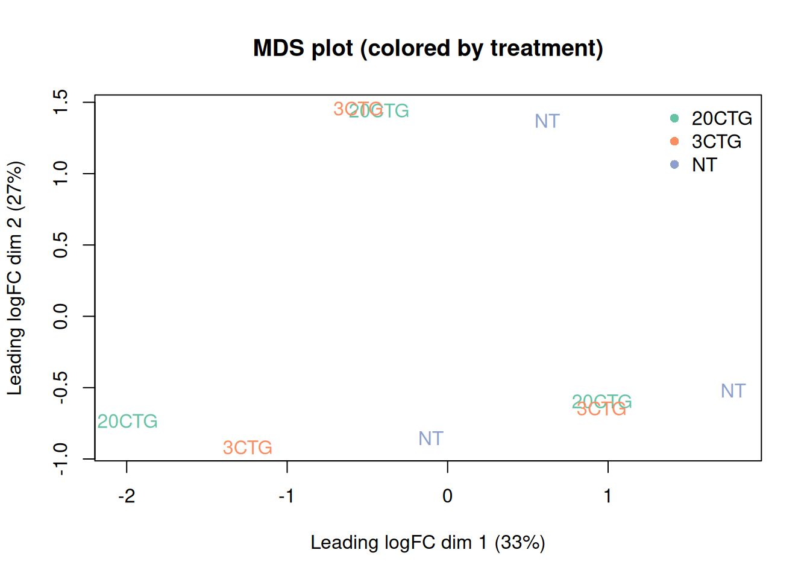
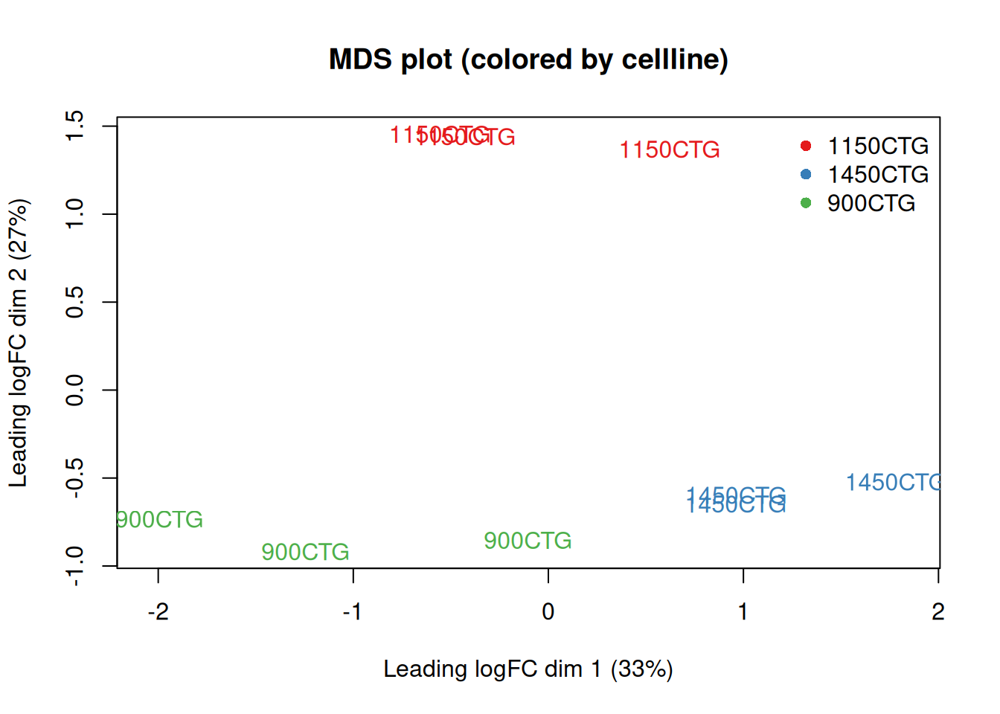

Chapter 3 QC, filtering and identifier mapping
This chapter performs shared QC steps used by both limma-voom and edgeR and DEseq2.
obj <- readRDS("data/d1_counts_and_meta.rds")
counts <- obj$counts
meta <- obj$meta
mappings <- obj$mappings
# Create a DGEList (edgeR data container)
dge <- edgeR::DGEList(counts = counts)
# Attach metadata
# (not required, but helpful)
dge$samples <- cbind(dge$samples, meta)
dge$samples## group lib.size norm.factors samples cellline treatment
## T8657_900CTG_NT 1 6630521 1 T8657_900CTG_NT 900CTG NT
## T8658_1150CTG_NT 1 6385596 1 T8658_1150CTG_NT 1150CTG NT
## T8659_1450CTG_NT 1 6736405 1 T8659_1450CTG_NT 1450CTG NT
## T8660_900CTG_20CTG 1 21407865 1 T8660_900CTG_20CTG 900CTG 20CTG
## T8661_1150CTG_20CTG 1 7300059 1 T8661_1150CTG_20CTG 1150CTG 20CTG
## T8662_1450CTG_20CTG 1 8906566 1 T8662_1450CTG_20CTG 1450CTG 20CTG
## T8663_900CTG_3CTG 1 15363308 1 T8663_900CTG_3CTG 900CTG 3CTG
## T8664_1150CTG_3CTG 1 5742524 1 T8664_1150CTG_3CTG 1150CTG 3CTG
## T8665_1450CTG_3CTG 1 8150376 1 T8665_1450CTG_3CTG 1450CTG 3CTG3.1 Filter lowly expressed genes
We use filterByExpr with the intended design to remove genes with insufficient counts.
design <- model.matrix(~ 0 + treatment+ cellline, data = meta)
keep <- edgeR::filterByExpr(dge, design)
dge_f <- dge[keep, , keep.lib.sizes = FALSE]
dim(dge)## [1] 62248 9## [1] 14704 93.2 TMM normalization
## group lib.size norm.factors samples cellline treatment
## T8657_900CTG_NT 1 6613352 0.9864614 T8657_900CTG_NT 900CTG NT
## T8658_1150CTG_NT 1 6367769 0.9803205 T8658_1150CTG_NT 1150CTG NT
## T8659_1450CTG_NT 1 6717956 0.9780540 T8659_1450CTG_NT 1450CTG NT
## T8660_900CTG_20CTG 1 21352764 0.7819891 T8660_900CTG_20CTG 900CTG 20CTG
## T8661_1150CTG_20CTG 1 7281383 1.0270153 T8661_1150CTG_20CTG 1150CTG 20CTG
## T8662_1450CTG_20CTG 1 8881365 1.0925886 T8662_1450CTG_20CTG 1450CTG 20CTG
## T8663_900CTG_3CTG 1 15312842 1.1129527 T8663_900CTG_3CTG 900CTG 3CTG
## T8664_1150CTG_3CTG 1 5727579 1.0131443 T8664_1150CTG_3CTG 1150CTG 3CTG
## T8665_1450CTG_3CTG 1 8127572 1.0685791 T8665_1450CTG_3CTG 1450CTG 3CTG3.3 Exploratory MDS plot
current_colors <- RColorBrewer::brewer.pal(n = length(unique(meta$treatment)), "Set2")
names(current_colors) <- levels(factor(meta$treatment))
plotMDS(dge_f,
labels = meta$treatment,
col = current_colors[meta$treatment],
main = "MDS plot (colored by treatment)"
)
legend("topright",
legend = names(current_colors),
col = current_colors,
pch = 16,
bty = "n"
)
3.4 Exploratory MDS plot - coloured by cellline
current_colors_cellline <- RColorBrewer::brewer.pal(n = length(unique(meta$cellline)), "Set1")
names(current_colors_cellline) <- levels(factor(meta$cellline))
plotMDS(dge_f,
labels = meta$cellline,
col = current_colors_cellline[meta$cellline],
main = "MDS plot (colored by cellline)"
)
legend("topright",
legend = names(current_colors_cellline),
col = current_colors_cellline,
pch = 16,
bty = "n"
)